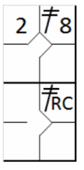
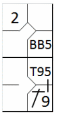
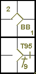
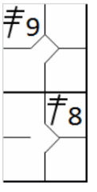
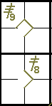

action { batter -> 2B8 }
/* Le second frappeur frappe un double dans le champ droit, le coureur avance */
action { batter -> 2BRC , runner2 -> + }

Selon la règle 9.06 de l'OBR, un coup sûr doit être comptabilisé comme un coup sûr d'une base, un coup sûr de deux bases, un coup sûr de trois bases ou un home run lorsque le frappeur atteint la base correspondante lorsqu'aucune erreur, aucun retrait ou aucun choix d'un défenseur ne se produit.
Lorsqu’il y a un, ou plusieurs coureurs sur les bases, le batteur gagne plus d’une base sur un coup sûr, alors que l’équipe en défense tente de retirer un coureur précédent, le scoreur officiel doit déterminer si le batteur a véritablement frappé un double ou un triple ou si le batteur-coureur a avancé au-delà de la première base sur un choix défensif. [OBR 9.06(b)].
Il convient également de rappeler qu'un batteur ne peut se voir attribuer un triple au batteur lorsqu’un coureur précédent est retiré à la plaque de but ou l’aurait été si aucune erreur n’avait été commise. Ne pas créditer un double au batteur lorsqu’un coureur précédent, depuis la première base, est retiré en troisième base ou l’aurait été si aucune erreur n’avait été commise.
Cependant, sauf pour les cas mentionnés ci-dessus, le scoreur officiel ne déterminera pas le nombre de bases pour un coup sûr par le nombre de bases gagnées par un coureur précédent. Un batteur peut mériter un double même si le coureur précédent ne gagne qu’une base ou n'avance pas ; il peut ne mériter qu'un simple même s'il atteint la deuxième base et même si le coureur précédent avance de deux bases. [OBR 10.06 commentaire]. Les exemples suivants devraient permettre de clarifier ce point.
Exemple 3:
Le coureur en première base avance en troisième sur le coup sûr. Le défenseur du champ droit tente en vain de
relayer la balle en troisième base pour éliminer le coureur. Grâce à ce relais, le frappeur atteint la deuxième base
sain et sauf.
Il ne s'agit pas d'un double, mais d'un simple avec une avance sur un choix défensif du défenseur (lancer).
Le passage du frappeur-coureur en deuxième base est indiqué par un petit trait vertical reliant les carrés de
première et de deuxième base.
| WBSC | Transcription dans l'outil de scorage | Outil |
|---|---|---|
|
 |
/* Le premier frappeur arrive sur base sur un 'Base on Ball' */ action { batter -> BB } /* Le deuxième frappeur frappe un hit sur le champ droit. Le défenseur du champ droit relance la balle vers le défenseur de la cinquième base pour essayé de retirer le coureur sans succès. Le batteur en profite alors pour gagner la deuxième base */ action { batter -> 1B9 T95 , runner1 -> ++ } |
 |
Exemple 4:
Le coureur en deuxième base n'avance que d'une base car il hésite à s'élancer pour voir si la balle est
attrapée. Le frappeur, quant à lui, atteint la deuxième base normalement.
Il s'agit d'un double même si le coureur n'a avancé que d'une base.
| WBSC | Transcription dans l'outil de scorage | Outil |
|---|---|---|
|
 |
/* Le premier batteur frappe un double dans le champ centre */ action { batter -> 2B8 } /* Le second frappeur frappe un double dans le champ droit, le coureur avance */ action { batter -> 2BRC , runner2 -> + } |
|
Exemple 5:
Au moment du coup sûr, le coureur en troisième base s'éloigne puis se retourne pour toucher la base, pensant
que la balle pourrait être attrapée au vol. La balle retombe néanmoins au sol, ce qui constitue un coup sûr, et le
frappeur atteint la deuxième base sans que le coureur n'ose marquer.
Il s'agit également d'un coup sûr à deux bases.
| WBSC | Transcription dans l'outil de scorage | Outil |
|---|---|---|
|
 |
/* Le premier batteur frappe un triple dans le champ droit */ action { batter -> 3B9 } /* Le second frappeur frappe un double dans le champ centre */ action { batter -> 2B8 } |
 |
Lorsque le batteur tente de faire un double ou un triple en glissant, il doit continuer de toucher la dernière base vers laquelle il s’est avancé. S’il glisse au-delà et est retiré avant de pouvoir revenir la toucher, il ne sera crédité que des bases qu’il avait atteintes en étant sauf. S’il glisse au-delà de la deuxième base et est retiré, le scoreur officiel lui créditera un simple. S’il glisse au delà de la troisième base et est retiré, il sera crédité d’un double. [OBR 9.06(c)].
Il est important de noter la différence entre atteindre une base en glissant et en courant. Si un coureur dépasse la base, il est considéré comme l'ayant atteint sans encombre et se voit attribuer un coup sûr correspondant au numéro de cette base, même s'il est ensuite retiré en tentant de retourner sur la base.
Toutefois, s'il glisse au-delà d'une base, il n'a pas atteint cette base en toute sécurité, et le coup sera donc comptabilisé en fonction du numéro de la base précédente.
Lorsque le batteur, après avoir frappé un coup sûr, est retiré sur un appel pour ne pas avoir touché une base, la dernière base atteinte déterminera si le scoreur officiel doit lui créditer un simple, un double ou un triple. Si un batteur-coureur est retiré sur un appel après avoir raté la plaque de but, on lui créditera un triple. S’il est retiré pour avoir raté la troisième base, on lui créditera un double.
S’il est retiré pour avoir raté la deuxième base, on lui créditera un simple. S’il est retiré pour avoir raté la première base, aucun coup sûr ne lui sera crédité mais le scoreur officiel inscrira une présence à la batte [OBR 9.06(d)].
Lorsqu’un batteur-coureur obtient deux bases, trois bases ou un coup de circuit conformément aux règles 5.06(b)(4) ou 6.01(h)(1), le scoreur officiel le créditera d’un double, d’un triple ou d’un coup de circuit, selon le cas [OBR 9.06(e)].
NOTE: Un frappeur qui a réussi un coup sûr et qui, malgré le fait d'être coincé entre les bases, atteint la base suivante sans erreur défensive, se verra attribuer un coup sûr correspondant à la dernière base qu'il a atteinte en toute sécurité.